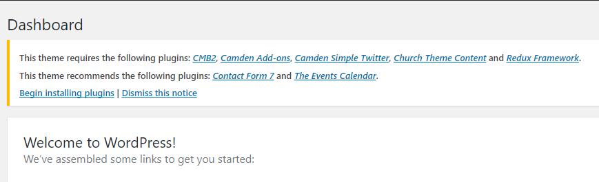
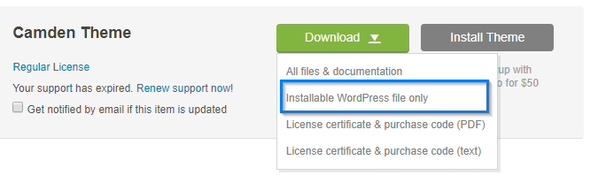
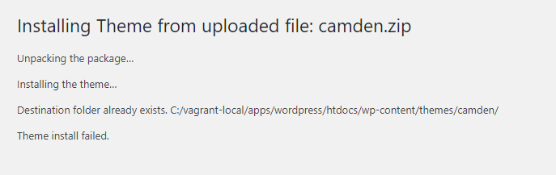

Camden theme can only be used with a working version of WordPress. We strongly recommend you to do a fresh WordPress installation and integrate your content into the pages accordingly. This theme has specific settings that might conflict with your current WordPress themes, plugins, database, etc.
This page contain beginners guide to WordPress theme, skip to the next page if you are already comfortable with WordPress.
If you need help installing WordPress, follow the documentation in WordPress Codex . Below are some useful WordPress information to help you get started:
wp-config-sample.php to wp-config.php , then edit
the file
(see Editing
wp-config.php ) and add your database information.
http://example.com/
), move or upload all contents of the unzipped WordPress directory (excluding the
WordPress
directory itself) into the root directory of your web server.
http://example.com/blog/
), create the blog directory on your server and upload the contents of the
unzipped
WordPress package to the directory via FTP.
http://example.com/
blog , for example,
you should
visit: http://example.com/blog/More detailed instructions follow.
The first step in getting started with our themes is installing them. There are two ways to do this, Theme Install from Administration Panels and FTP . Sometimes installation via Administration Panels may not work for you, usually because of a server restriction such as memory. In that case, you will need to install your theme manually via FTP .
To add a new Theme to your WordPress installation, follow these basic steps:
camden folder.
/public_html/wp-content/themes/
To select Camden theme for your site:
Your selection should immediately become active.
If you get the “Are You Sure You Want To Do This” message when installing the
theme via
WordPress Administration Panels, please make sure that you only upload the theme file, not the
whole
package. If the error message persists, install the theme via FTP, or increase your
max_execution_time , max_input_time , and memory_limit via the
php.ini
.
Ask your hosting company if you are not comfortable modifying php.ini .
To install the required plugins:

When you purchase our theme from Themeforest, you need to download the theme files from your Themeforest account. Navigate to your downloads tab on Themeforest and find the theme. Click the download button to see the two options. The Main Files contain everything, and the Installable WordPress Theme is the WordPress theme file only. Below is a full list of what is included along with a brief description of each item:
When a new version of your theme become available you will get an email notification from Themeforest. You can also use Envato Toolkit Plugin . You will receive notification in your WordPress Dashboard once the theme is updated. Please read the changelog so you can see what was modified in the new version.
We recommend you to keep always your theme updated, to ensure that it is fully compatible with latest WordPress version available.
We strongly recommend you to backing up your database and WordPress files . That way you will not lose any modifications and customizations that you made in your theme.
You can update your theme via FTP or WordPress Administration Panels. See the information below for each method.

Follow the instructions below for updating via FTP or WordPress Administration Panels.
The easiest way to update your theme is to upload it using WordPress Administration Panels
But because you already have a theme folder on your server with the same name as the folder inside your ZIP file of updated theme, most likely you will get the following error:

To avoid this error you have several choices:
wp-content/themes and rename your current theme
folder (e.g.
camden ) to something else (e.g. camden-backup ),
without adding
any spaces in the folder name.